Narrative RPG
A traveler visits the village of Mato which is holding its grand festival. The elder made a huge mistake which puts the festivities in jeopardy. The traveler must use the power of Combination to put things back to rights.
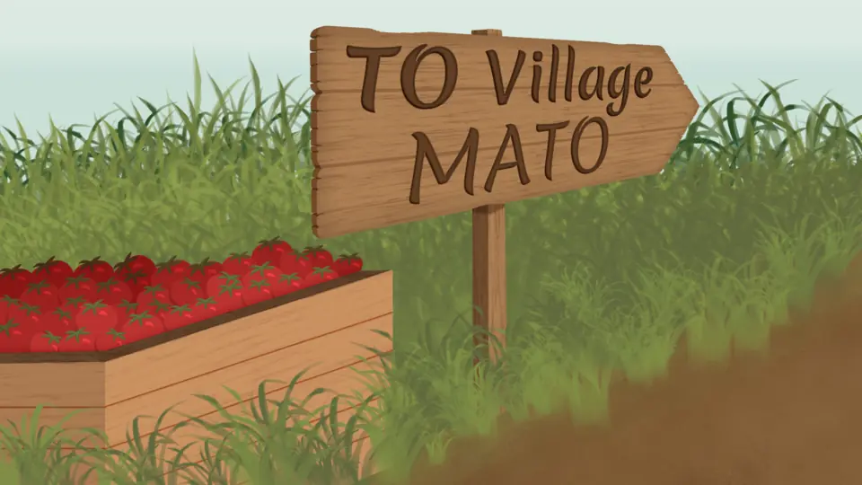
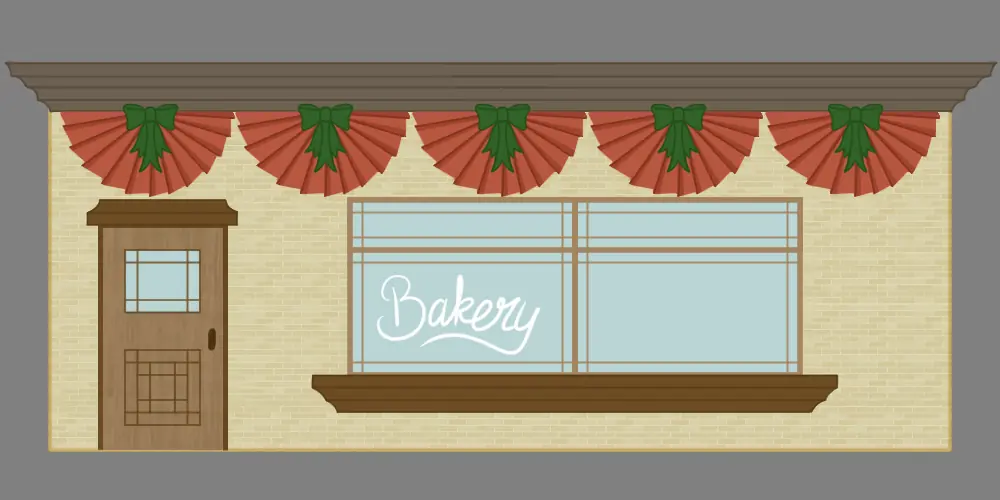
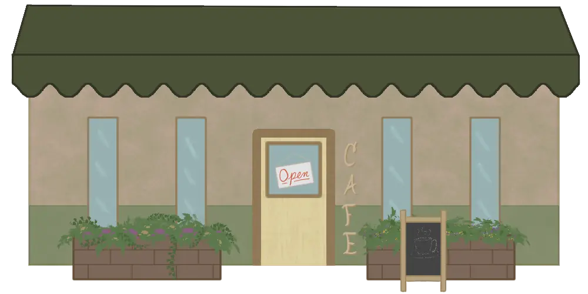
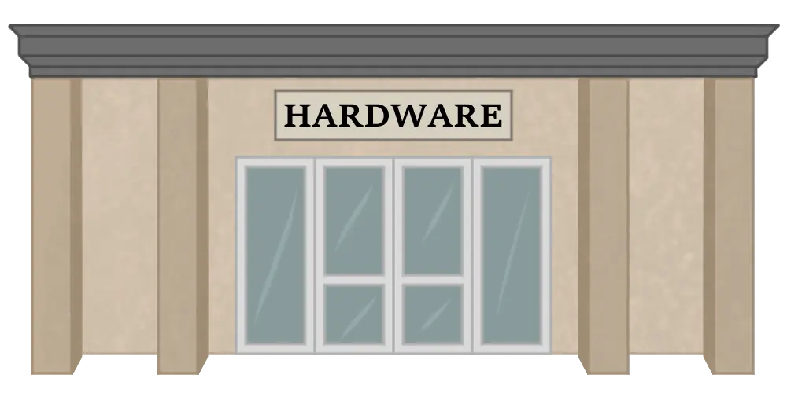
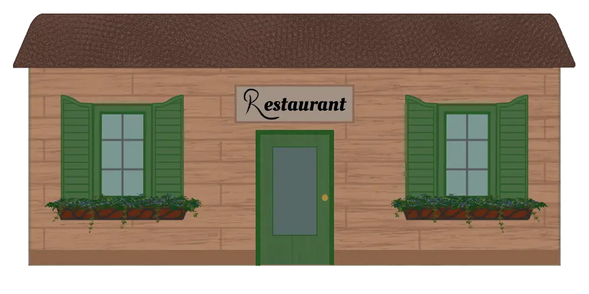
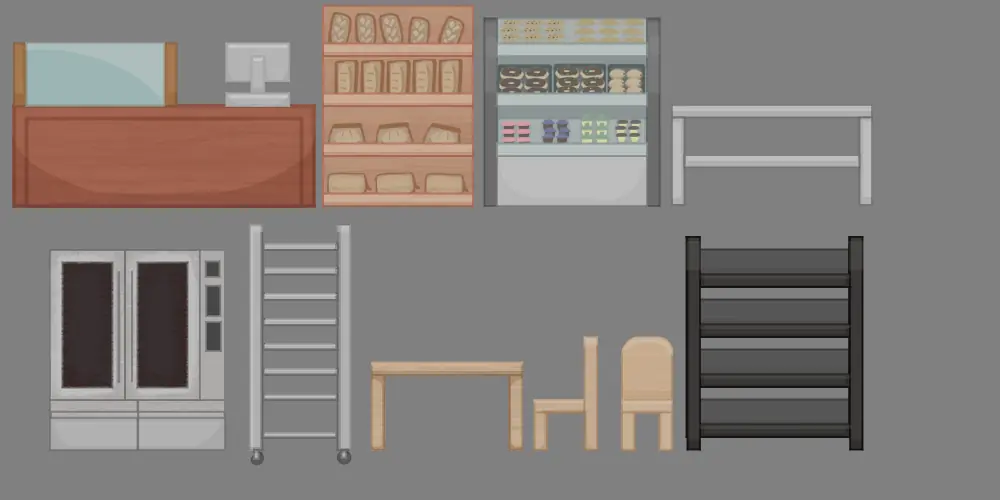
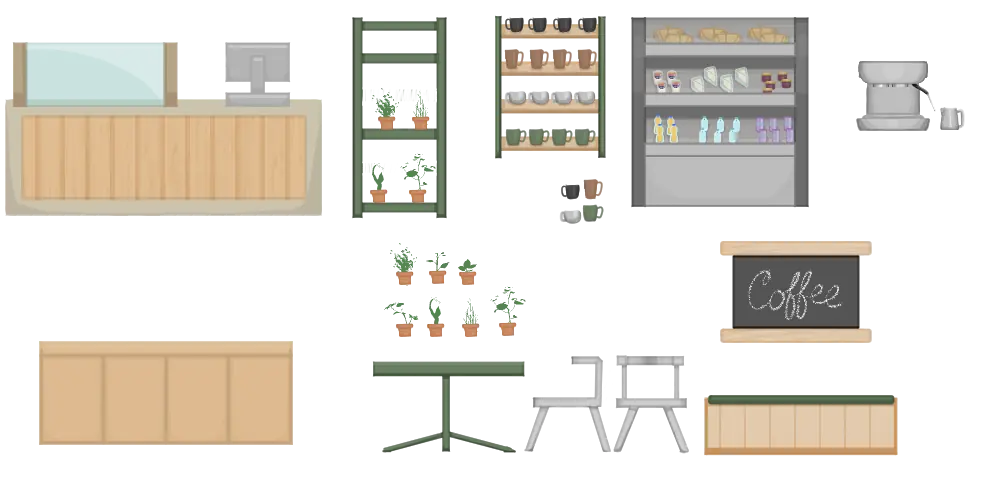
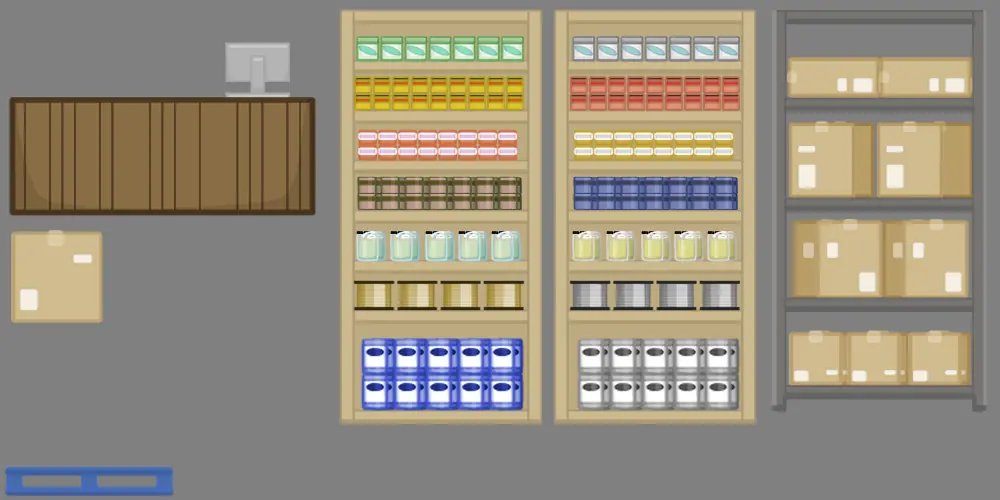
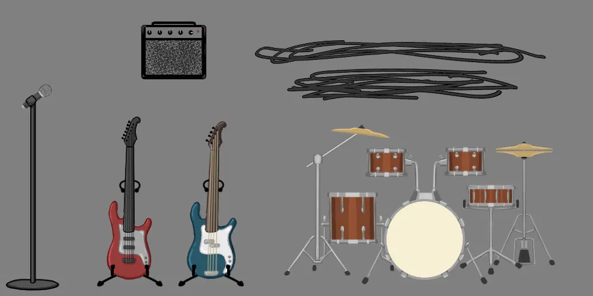
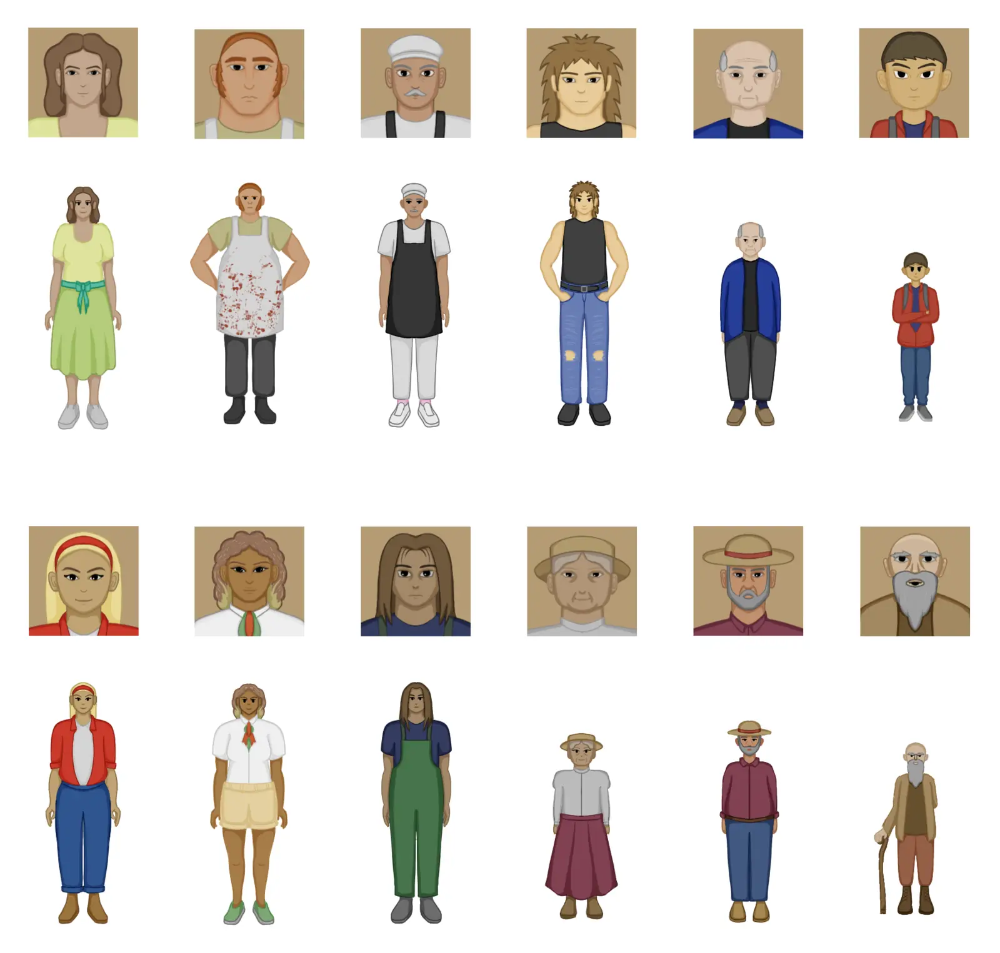
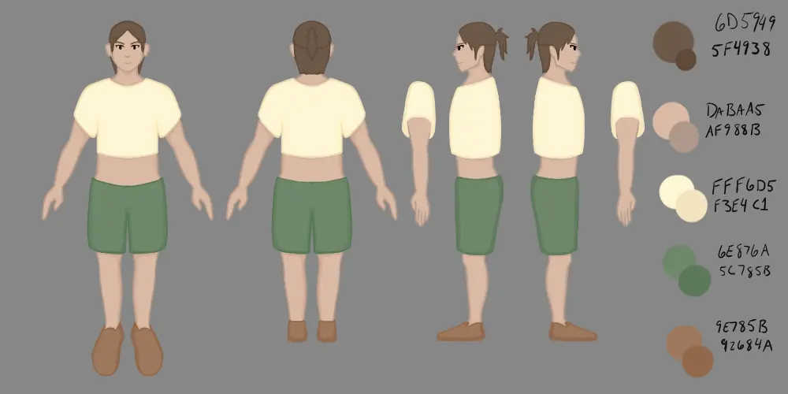
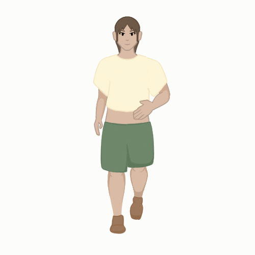
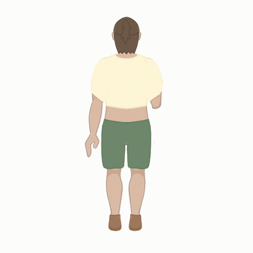
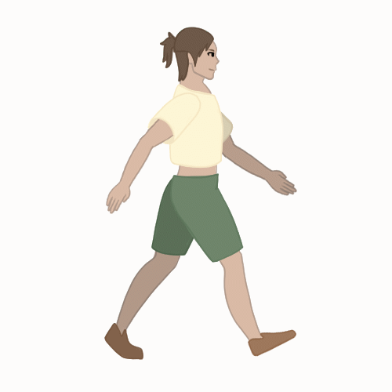